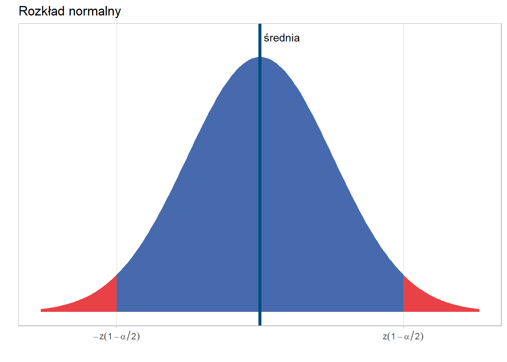

6 Statystyka opisowa
6.1 Analiza struktury
Do charakterystyk najczęściej wykorzystywanych przy opisie danych należą:
- miary przeciętne - służące do określania tej wartości zmiennej opisanej przez rozkład, wokół której skupiają się pozostałe wartości zmiennej,
- miary rozproszenia (dyspersji) - służące do badania stopnia zróżnicowania wartości zmiennej,
- miary asymetrii - służące do badania asymetrii rozkładu,
- miary koncentracji - służące do analizy stopnia skupienia poszczególnych jednostek wokół średniej.
Analiza struktury bazuje na dwóch typach miar:
6.2 Miary klasyczne - obliczane na podstawie wszystkich obserwacji
| Miara | Symbol | Wzór | Interpretacja |
|---|---|---|---|
| Średnia arytmetyczna | \(\bar{x}\) | \(\frac{\sum_{i=1}^N x_i}{N}\) | Wartość przeciętna |
| Odchylenie kwadratowe | \(d^2\) | \(\sum_{i=1}^N (x_i - \bar{x})^2\) | Kwadrat odchylenia przeciętnego |
| Odchylenie standardowe (dla populacji) | \(s\) | \(\sqrt{\frac{\sum_{i=1}^N (x_i - \bar{x})^2}{N}}\) | O ile przeciętnie odchylają się wartości od średniej |
| Wariancja (dla próby) | \(s^2\) | \(\frac{\sum_{i=1}^N (x_i - \bar{x})^2}{N-1}\) | Informuje o zróżnicowaniu próby |
| Rozstęp | \(R\) | \(max(x) - min(x)\) | Empiryczny obszar zmienności, wartość maksymalna cechy x minus wartość minimalna tej cechy |
| Współczynnik zmienności | \(V_x\) | \(\frac{s}{\bar{x}}\) | Informuje o relatywnym zróżnicowaniu populacji (próby). Zwykle wykorzystujemy do porównań dwóch lub więcej grup. Wyrażamy w procentach. |
| Współczynnik asymetrii | \(\alpha_3\) | \(\frac{\frac{1}{N}\sum_{i=1}^{N}{(x_{i}-\bar{x})^3}}{s^3}\) | Pozwala zidentyfikować czy rozkład jest symetryczny lub asymetryczny |
| Współczynnik koncentracji | \(\alpha_4\) | \(\frac{\frac{1}{N}\sum_{i=1}^{N}{(x_{i}-\bar{x})^4}}{s^4}\) | Pozwala zidentyfikować czy rozkład jest wysmukły czy spłaszczony |
6.3 Miary pozycyjne - wartość miary wskazuje dana jednostka.
| Miara | Symbol | Wzór | Interpretacja |
|---|---|---|---|
| Kwartyl 1 | \(Q_1\) | Dzieli populację na dwie części w stosunku 25 / 75 | |
| Kwartyl 2, Mediana | \(Q_2, Me\) | Dzieli populację na dwie części w stosunku 50 / 50 | |
| Kwartyl 3 | \(Q_3\) | Dzieli populację na dwie części w stosunku 75 / 25 | |
| Odchylenie ćwiartkowe | \(Q\) | \(Q=\frac{Q3-Q1}{2}\) | Mierzy ono przeciętne odchylenie wartości cechy zbiorowości od mediany |
| Pozycyjny współczynnik zmienności | \(V_Q\) | \(\frac{Q}{Me}\) | Mierzy przeciętne zróżnicowanie cechy |
| Pozycyjny współczynnik asymetrii | \(A_Q\) | \(\frac{Q_1+Q3-2Me}{2Q}\) | Mierzy (a)symetrię rozkładu |
Celem analizy struktury jest dostarczenie kilku liczb, które w łatwy sposób pozwolą na opis i porównania badanych cech.
Dominanta (inaczej moda, modalna) czyli najczęściej występująca wartość i jest wyznaczana dla zmiennych jakościowych.
6.4 Wyznaczanie przedziału ufności dla średniej i odsetka.
większość prowadzonych badań ogranicza się do analizy jedynie fragmentu populacji. Wówczas, oprócz obliczenia interesującej nas miary ważne jest także podanie możliwego błędu. Popularną praktyką jest obliczanie przedziałów ufności, które prezentują zakres, w którym z określonym prawdopodobieństwem znajduje się prawdziwa wartość parametru. Zwykle bierze się pod uwagę następujące prawdopodobieństwa: 90%, 95% i 99%, niemniej można wybrać dowolną wartość z przedziału 0-100%. We wzorach operuje się pojęciem poziomu istotności oznaczanym przez \(\alpha\).
Będziemy musieli wyznaczyć kwantyl rozkładu, który odpowiada przyjętemu poziomowi prawdopodobieństwa i tym samym obszar, który pokryje wyznaczony przedział ufności. Dla rozkładu normalnego ta sytuacja jest przedstawiona na wykresie:
W tabeli przedstawiono relację przyjętego prawdopodobieństwa, poziomu istotności oraz wartości kwantyli rozkładu normalnego.
| Prawdopodobieństwo | Poziom istotności | Kwantyl rozkł. norm. |
|---|---|---|
| 99% (0,99) | 0,01 | 2,58 |
| 95% (0,95) | 0,05 | 1,96 |
| 90% (0,90) | 0,10 | 1,64 |
Te wartości dla najpopularniejszych poziomów prawdopodobieństwa zawsze będą takie same. Natomiast w przypadku małych prób (\(n < 30\)) należy skorzystać z rozkładu t-Studenta. Kształt tego rozkładu jest zbliżony do normalnego, natomiast wartości kwantyli zależą od dwóch parametrów - przyjętego poziomu istotności oraz liczebności próby pomniejszonej o 1 (liczba stopni swobody).
6.4.1 Średnia
Jeśli odchylenie standardowe w populacji nie jest znane to można wykorzystać wzór, w którym używa się wartości odchylenia standardowego obliczonego na podstawie próbie. Trzeba jednak rozróżnić małą oraz dużą próbę. Przyjętym w statystyce progiem jest \(n > 30\), kiedy uznaje się próbę za dużą. Podstawową różnicą jest wykorzystanie we wzorze przedziału ufności dla małej próby kwantyla rozkładu t-Studenta, a dla dużej kwantyla rozkładu normalnego.
\[P\left\{\bar{X}-t_{(1-\alpha/2,n-1)}\frac{s}{\sqrt{n-1}}<m<\bar{X}+t_{(1-\alpha/2,n-1)}\frac{s}{\sqrt{n-1}}\right\}=1-\alpha\]
gdzie:
- \(m\) - prawdziwa wartość średniej w populacji,
- \(\bar{X}\) - estymator średniej,
- \(t_{(1-\alpha/2,n-1)}\) - kwantyl rozkładu t-Studenta dla poziomu istotności \(\alpha\) z \(n-1\) stopniami swobody,
- \(s\) - odchylenie standardowe z próby,
- \(n\) - liczebność próby.
Przykład
Postanowiono oszacować średni czas potrzebny do wykonania detalu. Z populacji robotników wylosowano próbę 17 osób i dokonano pomiaru czasu wykonywania detalu. Okazało się, że średni czas wykonania detalu wynosił 15 minut, a odchylenie standardowe 2 minuty. Rozkład czasu wykonania tego detalu ma rozkład normalny i przyjęto poziom istotności \(\alpha=0,05\).
Wartość kwantyla rozkładu t-Studenta wynosi 2,12.
\[15-2,12\frac{2}{\sqrt{16}}<m<15+2,12\frac{2}{\sqrt{16}}\]
\[13,94 < m < 16,06\]
Średni czas wykonania detalu z 95% prawdopodobieństwem jest nie mniejszy niż 13,94 i nie większy niż 16,06 minuty.
# Dane wejściowe
x_bar <- 15 # średnia próby
s <- 2 # odchylenie standardowe próby
n <- 17 # liczność próby
alpha <- 0.05 # poziom istotności
# Wartość t dla 16 stopni swobody (n - 1)
t_crit <- qt(1 - alpha/2, df = n - 1)
# Obliczenie błędu standardowego
SE <- s / sqrt(n-1)
# Obliczenie przedziału ufności
CI_lower <- x_bar - t_crit * SE
CI_upper <- x_bar + t_crit * SE
# Wynik
cat("95% przedział ufności dla średniego czasu wykonania detalu: [",
round(CI_lower, 2), ",", round(CI_upper, 2), "]\n")95% przedział ufności dla średniego czasu wykonania detalu: [ 13.94 , 16.06 ]6.4.2 Proporcja
Na podobnej zasadzie można także wyznaczyć przdział ufności dla odsetka.
\[ P\left\{\frac{m}{n}-z_{(1-\alpha/2)}\sqrt{\frac{\frac{m}{n}\left(1-\frac{m}{n}\right)}{n}}<p<\frac{m}{n}+z_{(1-\alpha/2)}\sqrt{\frac{\frac{m}{n}\left(1-\frac{m}{n}\right)}{n}}\right\} \approx 1-\alpha\]
gdzie:
- \(p\) - wartość proporcji w populacji,
- \(z_{(1-\alpha/2)}\) - kwantyl rozkładu normalnego obliczony dla poziomu istotności \(\alpha\),
- \(m\) - liczba jednostek posiadających daną cechę,
- \(n\) - liczebność
Przykład
Spośród 10 tysięcy pracowników wylosowano próbę liczącą 200 osób i przeprowadzono badanie dotyczące opuszczenia zakładu pracy. Okazało się, że 20 z 200 respondentów zamierza, z różnych względów, opuścić zakład pracy. Dla poziomu ufności 90% wyznaczyć przedział ufności dla wskaźnika pracowników planujących opuścić bieżące miejsce pracy.
\[\frac{20}{200}-1,64\sqrt{\frac{\frac{20}{200}\left(1-\frac{20}{200}\right)}{200}} < p < \frac{20}{200}+1,64\sqrt{\frac{\frac{20}{200}\left(1-\frac{20}{200}\right)}{200}}\]
\[0,065 < p < 0,135\]
\[6,5\% < p < 13,5\%\]
Z prawdopodobieństwem 90% możemy stwierdzić, że pracowników planujących opuścić zakład pracy jest nie mniej niż 6,5% i nie więcej niż 13,5%.
# Dane wejściowe
n <- 200
m <- 20
m_n <- m / n
alpha <- 0.10
z_crit <- qnorm(1 - alpha/2) # z dla 90% CI
# Błąd standardowy
SE <- sqrt(m_n * (1 - m_n) / n)
# Przedział ufności
CI_lower <- m_n - z_crit * SE
CI_upper <- m_n + z_crit * SE
# Wynik
cat("90% przedział ufności dla odsetka pracowników planujących odejście: [",
round(CI_lower, 4), ",", round(CI_upper, 4), "]\n")90% przedział ufności dla odsetka pracowników planujących odejście: [ 0.0651 , 0.1349 ]6.5 Analiza zależności pomiędzy zmiennymi ilościowymi
Korelacja [łac.], mat. wzajemne powiązanie, współzależność zjawisk lub obiektów; w teorii prawdopodobieństwa i statystyce — współzależność liniowa zmiennych losowych (jej liczbową miara jest współczynnik korelacji) [źródło: słownik PWN].
Sprawdźmy czy liczba klientów jest skorelowana ze sprzedażą w sklepie nr 1. Pierwszym krokiem w analizie korelacji jest stworzenie wykresu rozrzutu:
Na tej podstawie możemy już stwierdzić, że zależność jest dodatnia - wzrost wartości jednej cechy pociąga za sobą wzrost wartości drugiej cechy:
- wzrost temperatury, większa sprzedaż lodów;
- wzrost wynagrodzenia, zwiększenie wydatków;
- mniej czasu spędzonego na działaniach marketingowych, mniej klientów.
Z korelacją ujemną mielibyśmy do czynienia, gdy wartości jednej cechy by rosły, a drugiej malały. Przykłady ujemnej korelacji:
- liczba nieobecności na zajęciach jest zwykle związana z niższymi ocenami;
- większa prędkość pociągu, krótszy czas dotarcia do stacji końcowej;
- spadek temperatury, wzrost sprzedaży grzejników.
Wartością liczbową, która określa kierunek korelacji jest kowariancja. Wyznaczenie kowariancji polega na policzeniu różnic wartości obu cech od średniej, a następnie ich przemnożeniu i uśrednieniu, zgodnie ze wzorem:
\[cov(x,y)=cov(y,x)=\frac{1}{n}\sum\limits_{i=1}^{n}{(x_{i}-\bar{x})\cdot(y_{i}-\bar{y})}\]
Znak kowariancji determinuje kierunek zależności, który jest ustalany na podstawie iloczynu różnic pomiędzy wartościami średnich a analizowanymi cechami.
Jeśli kowariancja będzie:
- \(cov(x,y)=0\) — brak zależności,
- \(cov(x,y)<0\) — ujemna zależność,
- \(cov(x,y)>0\) — dodatnia zależność.
W przypadku sklepu nr 1 kowariancja wynosi 9.4843^{4}, co oczywiście pociąga za sobą dodatnią zależność. Na podstawie kowariancji nie możemy natomiast wyznaczyć siły zależności ponieważ jest wyznaczona w dziwnych jednostkach - osobo-euro. Poza tym może przyjąć wartości z całego zakresu liczb rzeczywistych: \((-\infty;+\infty)\).
Standaryzując kowariancję z wykorzystaniem odchylenia standardowego każdej cechy otrzymamy współczynnik korelacji liniowej Pearsona:
\[r_{xy}=r_{yx}=\frac{cov(X,Y)}{S_{x}\cdot S_{y}}\]
lub
\[r_{xy}=\frac{\sum\limits_{i=1}^{n}{(x_{i}-\bar{x})\cdot(y_{i}-\bar{y})}}{\sqrt{\sum\limits_{i=1}^{n}{(x_{i}-\bar{x})^2\cdot(y_{i}-\bar{y})^2}}}\]
Współczynnik ten jest wielkością unormowaną, przyjmuje wartości z przedziału \(r\in<-1;1>\).
Jeśli:
- \(r_{xy}=1\) — korelacja dodatnia doskonała,
- \(0<r_{xy}<1\) — korelacja dodatnia niedoskonała (słaba/umiarkowana/silna)
- \(r_{xy}=0\) — brak zależności,
- \(-1<r_{xy}<0\) — korelacja ujemna niedoskonała (słaba/umiarkowana/silna)
- \(r_{xy}=-1\) — korelacja ujemna doskonała.
W sklepie nr 1 współczynnik korelacji liniowej Pearona wynosi 0.94, co oznacza, że pomiędzy wartością sprzedaży a liczbą klientów występuje silna dodatnia korelacja liniowa.
W przypadku, gdy w zbiorze analizowanych cech znajdą się wartości odstające, które zaburzają liniowość relacji, współczynnik korelacji liniowej może nie spełniać swojej funkcji. Wówczas należy skorzystać ze współczynnika korelacji rang Spearmana, który jest współczynnikiem korelacji liniowej Pearsona, ale obliczanym na rangach.
Rangowanie polega na posortowaniu wartości jednej cechy rosnąco - przypisanie kolejnych wartości od \(1\) do \(n\) (jak w sporcie), na następnie powtórzenie operacji dla drugiej cechy. Jeśli jakaś wartość będzie się powtarzać (ex aequo), wówczas wyznaczamy wartość tzn. rangi wiązanej - średniej arytmetycznej z rang tej wartości.
W programie R do obliczenia korelacji dla cech ciągłych wykorzystuje się funkcję cor(). Domyślna metoda zwraca współczynnik korelacji liniowej Pearsona.
cor(rossmann_1$sprzedaz, rossmann_1$liczba_klientow)[1] 0.9432882cor(rossmann_1$sprzedaz, rossmann_1$liczba_klientow, method = "pearson")[1] 0.9432882Z kolei do obliczenia korelacji rang Spearmana należy zmodyfikować argument method.
cor(rossmann_1$sprzedaz, rossmann_1$liczba_klientow, method = "spearman")[1] 0.9240377Do testowania istotności statystycznej wykorzystywana jest funkcja cor.test.
cor.test(rossmann_1$sprzedaz, rossmann_1$liczba_klientow, method = "pearson")
Pearson's product-moment correlation
data: rossmann_1$sprzedaz and rossmann_1$liczba_klientow
t = 49.297, df = 301, p-value < 2.2e-16
alternative hypothesis: true correlation is not equal to 0
95 percent confidence interval:
0.9293934 0.9545131
sample estimates:
cor
0.9432882 Na tej podstawie stwierdzamy, że współczynnik korelacji pomiędzy cechami sprzedaż i liczba klientów wynosi 0,94 i jest istotny statystycznie.
6.6 Analiza zależności pomiędzy zmiennymi jakościowymi
Celem analizy współzależności jest określenie siły związku pomiędzy dwiema cechami jakościowymi. Sprawdźmy czy istnieje zależność pomiędzy wynikiem z egzaminu a płcią?
Podstawą takiej analizy jest tablica kontyngencji albo tablica krzyżowa. W przypadku obserwacji statystycznej dotyczącej dużej ilości zmiennych, operowanie wartościami szczegółowymi jest uciążliwe. W celu stwierdzenia istnienia lub braku związku korelacyjnego konstruuje się tablicę korelacyjną. Na skrzyżowaniu kolumn z wierszami wpisuje się liczebności jednostek zbiorowości statystycznej, u których zaobserwowano jednoczesne występowanie określonej wartości \(x_{i}\) i \(y_{i}\). Ogólna postać tablicy krzyżowej jest następująca:
| cecha X / cecha Y | \(y_{1}\) | \(y_{2}\) | \(\cdots\) | \(y_{j}\) | \(\cdots\) | \(y_{r}\) | \(\sum\limits_{j}\) |
|---|---|---|---|---|---|---|---|
| \(x_{1}\) | \(n_{11}\) | \(n_{12}\) | \(\cdots\) | \(n_{1j}\) | \(\cdots\) | \(n_{1r}\) | \(n_{1.}\) |
| \(x_{2}\) | \(n_{21}\) | \(n_{22}\) | \(\cdots\) | \(n_{2j}\) | \(\cdots\) | \(n_{2r}\) | \(n_{2.}\) |
| \(\cdots\) | \(\cdots\) | \(\cdots\) | \(\cdots\) | \(\cdots\) | \(\cdots\) | \(\cdots\) | \(\cdots\) |
| \(x_{i}\) | \(n_{i1}\) | \(n_{i2}\) | \(\cdots\) | \(n_{ij}\) | \(\cdots\) | \(n_{ir}\) | \(n_{i.}\) |
| \(\cdots\) | \(\cdots\) | \(\cdots\) | \(\cdots\) | \(\cdots\) | \(\cdots\) | \(\cdots\) | \(\cdots\) |
| \(x_{k}\) | \(n_{k1}\) | \(n_{k2}\) | \(\cdots\) | \(n_{kj}\) | \(\cdots\) | \(n_{kr}\) | \(n_{k.}\) |
| \(\sum\limits_{i}\) | \(n_{.1}\) | \(n_{.2}\) | \(\cdots\) | \(n_{.j}\) | \(\cdots\) | \(n_{.r}\) | \(n\) |
Jak wynika z tablicy zmienna losowa \(X\) przyjmuje \(k\) wariantów (i=1,2,…,k), zaś zmienna losowa \(Y\) przyjmuje \(r\) wariantów (j=1,2,…,r).
Symbol \(n_{.j}\) oznacza liczbę jednostek, które mają wariant \(y_{j}\) zmiennej Y, natomiast symbol \(n_{i.}\) - liczbę jednostek, które mają wariant \(x_{i}\) zmiennej X. Symbole \(n_{ij}\) oznaczają liczbę jednostek, które posiadają jednocześnie wariant \(x_{i}\) cechy X i warianty \(y_{j}\) cechy Y. Symbol \(n\) oznacza liczebność próby, przy czym:
\[n=\sum\limits_{i=1}^{k}{n_{i.}}=\sum\limits_{j=1}^{r}{n_{.j}}=\sum\limits_{i=1}^{k}\sum\limits_{j=1}^{r}{n_{ij}}\]
W analizowanym przykładzie pozyskaliśmy informację od 500 osób na temat wyniku egzaminu oraz płci. Tablica krzyżowa tych danych wygląda następująco:
| Płeć / Wynik | Nie zdany | Zdany | Suma |
|---|---|---|---|
| Mężczyzna | 100 | 70 | 170 |
| Kobieta | 130 | 200 | 330 |
| Suma | 230 | 270 | 500 |
Do odpowiedzi na pytanie czy istnieje zależność pomiędzy tymi cechami wykorzystamy statystykę chi-kwadrat (\(\chi^2\)). W pierwszym kroku musimy obliczyć oczekiwane (teoretyczne) częstości dla każdej komórki czyli wartości jakie musiałyby występować, żeby zależności nie było. Wzór na liczebności teoretyczne jest następujący \(\hat{n}_{ij}=\frac{n_{i.} \cdot n_{.j}}{n}\). Na tej postawie wyznacza się wartość statystyki:
\[\chi^{2}=\sum\limits_{i=1}^{k}\sum\limits_{j=1}^{r}{\frac{(n_{ij}-\hat{n}_{ij})^2}{\hat{n}_{ij}}}\]
gdzie:
- \(r\) - liczba wariantów cechy Y,
- \(k\) - liczba wariantów cechy X,
- \(n_{ij}\) - liczebności empiryczne dla i-tego wariantu cechy X i j-tego wariantu cechy Y,
- \(\hat{n}_{ij}\) - liczebności teoretyczne dla i-tego wariantu cechy X i j-tego wariantu cechy Y.
Sama wartość statystyki chi-kwadrat nie informuje sile zależności pomiędzy analizowanymi zmiennymi. W celu określenia siły zależności musimy wyznaczyć jedną z dostępnych miar korelacji: współczynnik V-Cramera lub współczynnik zbieżności T-Czuprowa:
\[V=\sqrt{\frac{\chi^2}{n \cdot min(k-1,r-1)}}\]
\[T=\sqrt{\frac{\chi^2}{n \cdot \sqrt{(k-1)(r-1)}}}\]
gdzie:
- \(\chi^2\) - wyznaczona wartość statystyki \(\chi^2\),
- \(n\) - liczba wszystkich obserwacji,
- \(k\) - liczba kolumn tabeli kontyngencji bez sumy (liczba wariantów pierwszej cechy),
- \(r\) - liczba wierszy tabeli kontyngencji bez sumy (liczba wariantów drugiej cechy).
Możemy przyjąć pewne umowne progi dotyczące interpretacji tych miar:
- od 0,00 do 0,29 - słaby związek pomiędzy zmiennymi,
- od 0,30 do 0,49 - umiarkowany związek pomiędzy zmiennymi,
- od 0,50 do 1,00 - silny związek pomiędzy zmiennymi.
W celu sprawdzenia istotności statystycznej pomiędzy cechami wykorzystuje się funkcję chisq.test().
Układ hipotez jest następujący:
- \(H_0:\) zmienne są niezależne,
- \(H_1:\) zmienne nie są niezależne.
dane <- matrix(c(100, 70, 130, 200), ncol=2, byrow = T)
dane [,1] [,2]
[1,] 100 70
[2,] 130 200chisq.test(dane)
Pearson's Chi-squared test with Yates' continuity correction
data: dane
X-squared = 16.279, df = 1, p-value = 5.468e-05Na tej podstawie stwierdzamy, że zmienne są niezależne.
library(confintr)
cramersv(chisq.test(dane))[1] 0.1804357Wartość współczynnika V-Cramera wskazuje na bardzo słabe powiązanie pomiędzy cechami.
6.7 Analiza zależności pomiędzy zmiennymi - zmienna jakościowa i ilościowa
W przypadku testowania wartości przeciętnych należy wprowadzić pojęcie prób zależnych i niezależnych:
próby zależne (paired) - analizowane są te same jednostki, ale różne cechy.
próby niezależne (unpaired) - analizowane są różne jednostki, ale ta sama cecha.
W zależności od tego czy spełnione są odpowiednie założenia dotyczące normalności cechy oraz równości wariancji należy wybrać odpowiedni test.
6.7.1 Test t-średnich
Weryfikacja równości średnich może odbywać się na zasadzie porównania wartości średniej w jednej grupie z arbitralnie przyjętym poziomem lub w dwóch różnych grupach. W pierwszym przypadku rozważamy układ hipotez:
- \(H_0: m = m_0\)
- \(H_1: m \neq m_0\) lub \(H_1: m < m_0\) lub \(H_1: m > m_0\)
natomiast w drugim przypadku hipotezy będą wyglądać następująco:
- \(H_0: m_1 = m_2\)
- \(H_1: m_1 \neq m_2\) lub \(H_1: m_1 < m_2\) lub \(H_1: m_1 > m_2\)
Alternatywnie hipotezę zerową można zapisać jako \(m_1 - m_2 = 0\) czyli sprawdzamy czy różnica pomiędzy grupami istotnie różni się od zera.
W funkcji t.test() z pakietu stats w przypadku jednej próby należy podać argument x czyli wektor z wartościami, które są analizowane oraz wartość, z którą tą średnią porównujemy (argument mu, który domyślnie jest równy 0). Dodatkowo w argumencie alternative wskazujemy jaką hipotezę alternatywną bierzemy pod uwagę.
Dla weryfikacji równości średniej w dwóch próbach należy dodać argument y z wartościami w drugiej próbie. W tym przypadku mamy także możliwość określenia czy próby są zależne (argument paired) lub czy wariancja w obu próbach jest taka sama (var.equal). Jeżeli wariancje są różne to program R przeprowadzi test t Welcha i liczba stopni swobody nie będzie liczbą całkowitą.
6.7.2 ANOVA
W przypadku większej liczby grup stosuje się jednoczynnikową analizę wariancji (ANOVA). Ta analiza wymaga spełnienia założenia o normalności rozkładu i równości wariancji w badanych grupach. Układ hipotez jest następujący:
- \(H_0: m_1 = m_2 = m_3 = ... = m_k\)
- \(H_1: \exists_{i,j\in\{1,..,k\}} \; m_i \neq m_j\)
Za pomocą funkcji aov() można w R przeprowadzić jednoczynnikową analizę wariancji. Jako argument funkcji należy podać formułę przedstawiającą zależność zmiennej badanej do zmiennej grupującej wykorzystując w tym celu symbol tyldy (~) w następującym kontekście: zmienna_analizowana ~ zmienna_grupująca. Przy takim zapisie należy także w argumencie data podać nazwę zbioru danych.
W porównaniu do wcześniej opisanych funkcji, aov() nie zwraca w bezpośrednim wyniku wartości p. Aby uzyskać tę wartość należy wynik działania tej funkcji przypisać do obiektu, a następnie na nim wywołać funkcję summary().
W przypadku odrzucenia hipotezy zerowej można przeprowadzić test Tukeya w celu identyfikacji różniących się par wykorzystując funkcję TukeyHSD() i jako argument podając obiekt zawierający wynik ANOVA.
W sytuacji, w której założenia użycia testu parametrycznego nie są spełnione, należy skorzystać z testów nieparametrycznych. W przypadku testowania miar tendencji centralnej różnica pomiędzy testami parametrycznymi a nieparametrycznymi polega na zastąpieniu wartości średniej medianą. Z punktu widzenia obliczeń w miejsce oryginalnych wartości cechy wprowadza się rangi czyli następuje osłabienie skali pomiarowej - z ilorazowej na porządkową.
6.7.3 Test Wilcoxona
Test Wilcoxona jest nieparametryczną wersją testu t. Hipotezy w tym teście dotyczą równości rozkładów:
- \(H_0: F_1=F_2\)
- \(H_1: F_1 \neq F_2\)
Wartość statystyki testowej będzie zależna od typu testu, natomiast w R funkcja, której należy użyć to wilcox.test(). Argumenty tej funkcji są takie same jak w przypadku testu t.
6.7.4 Test Kruskala-Wallisa
Z kolei test Kruskala-Wallisa jest nieparametrycznym odpowiednikiem ANOVA. Hipotezy są następujące:
- \(H_0: F_1=F_2=F_3=...=F_k\)
- \(H_1: \exists_{i,j\in\{1,..,k\}} \; F_i \neq F_j\)
W programie R korzysta się z funkcji kruskal.test(), która przyjmuje takie same argumenty jak funkcja do metody ANOVA aov(). Główną różnicą jest sposób podawania wyniku testu, ponieważ w tym przypadku od razu otrzymujemy wartość p. W przypadku odrzucenia hipotezy zerowej należy sprawdzić, które grupy różnią się między sobą. Można to zrobić za pomocą funkcji pairwise.wilcox.test().
Przykład
Sprawdzimy czy średni poziom PM10 w latach 2015 i 2016 różnił się od siebie.
\(H_0\): średni poziom PM10 w obu latach nie różni się
\(H_1\): średni poziom PM10 w obu latach różni się
W związku z tym, że badana cecha nie ma rozkładu normalnego zostanie przeprowadzony test Wilcoxona. Mamy tutaj do czynienia z testem dla prób niezależnych - badana jest jedna cecha (poziom PM10) w ramach rozłącznych grup.
Shapiro-Wilk normality test
data: smog_2015_2016$pm10
W = 0.68989, p-value < 2.2e-16
Wilcoxon rank sum test with continuity correction
data: smog_2015_2016$pm10 by smog_2015_2016$rok
W = 66028, p-value = 0.1903
alternative hypothesis: true location shift is not equal to 0Przyjmując poziom istotności \(\alpha = 0,05\) nie mamy podstaw do odrzucenia \(H_0\) - średni poziom PM10 w obu latach nie różni się.
Przykład
Czy minimalna i maksymalna temperatura w ciągu dnia różni się od siebie w sposób istotny?
\(H_0\): minimalna i maksymalna temperatura w ciągu dnia nie różni się istotnie
\(H_1\): minimalna i maksymalna temperatura w ciągu dnia różni się istotnie
W pierwszej kolejności weryfikujemy normalność rozkładu analizowanych cech.
smog_2019 <- smog %>%
filter(rok == 2019)
shapiro.test(smog_2019$tmin_daily)
Shapiro-Wilk normality test
data: smog_2019$tmin_daily
W = 0.98742, p-value = 0.002985shapiro.test(smog_2019$tmax_daily)
Shapiro-Wilk normality test
data: smog_2019$tmax_daily
W = 0.97936, p-value = 4.377e-05Temperatura w tym zbiorze danych nie ma rozkładu normalnego. W tym przypadku analizujemy próby zależne - badamy dwie różne cechy dla tych samych jednostek (obserwacji).
wilcox.test(x = smog_2019$tmin_daily,
y = smog_2019$tmax_daily,
paired = TRUE)
Wilcoxon signed rank test with continuity correction
data: smog_2019$tmin_daily and smog_2019$tmax_daily
V = 0, p-value < 2.2e-16
alternative hypothesis: true location shift is not equal to 0Na podstawie podanej wartości p odrzucamy \(H_0\) - minimalna i maksymalna temperatura w ciągu dnia różni się istotnie.
Przykład
Analogicznie można także sprawdzić czy np. poziom PM10 różni się w pomiędzy kwartałami - w takim przypadku rozpatrujemy głównie próby niezależne.
\(H_0\): poziom PM10 nie różni się w pomiędzy kwartałami
\(H_1\): poziom PM10 różni się w pomiędzy kwartałami - co najmniej jedna para jest różna
kruskal.test(smog_2019$pm10 ~ smog_2019$kwartal)
Kruskal-Wallis rank sum test
data: smog_2019$pm10 by smog_2019$kwartal
Kruskal-Wallis chi-squared = 83.318, df = 3, p-value < 2.2e-16Przyjmując poziom istotności \(\alpha = 0,05\) odrzucamy hipotezę zerową - dla co najmniej jedna pary kwartałów występuje istotna różnica.